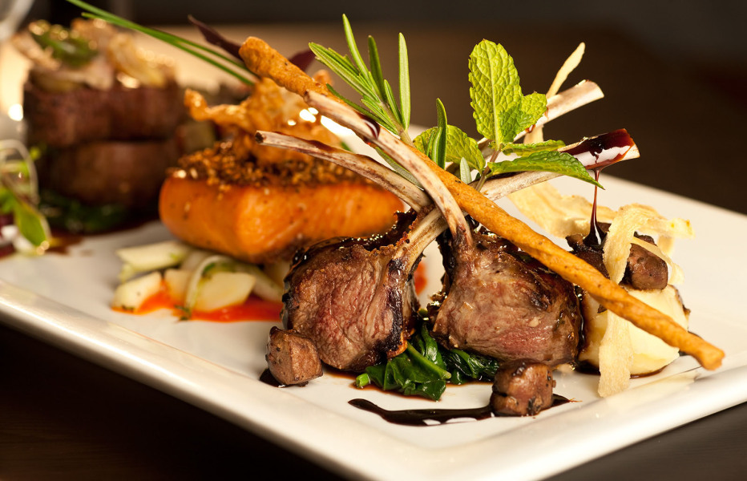
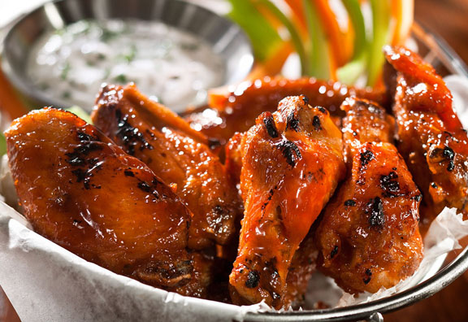
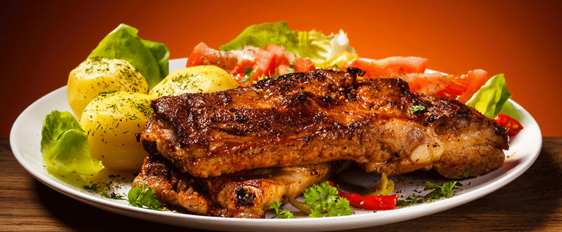

About us
Dekel restaurant was one of the first American fast food chains to expand internationally,
opening outlets in Canada, the United Kingdom,
Mexico, and Jamaica by the mid-1960s. Throughout the 1970s and 1980s,
it experienced mixed fortunes domestically, as it went through a series of changes in corporate ownership with little or no experience in the
restaurant business. In the early 1970s, Dekel was sold to the spirits distributor Heublein,
which was
taken over by the R.J. Reynolds food and tobacco conglomerate; that company sold the chain to PepsiCo.
The chain continued to expand overseas, however, and in 1987, it became the first Western restaurant chain to open in China.
It has since expanded rapidly in China, which is now the company's single largest market. PepsiCo spun off its restaurants division as Tricon Global Restaurants,
which later changed its name to Yum! Brands.
Learn more →


